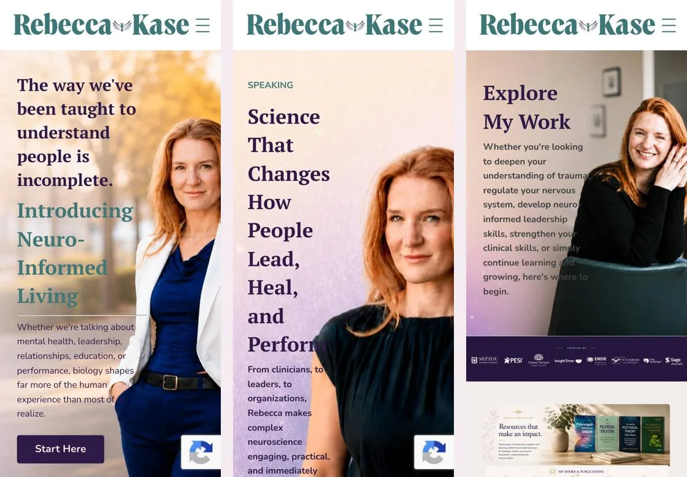
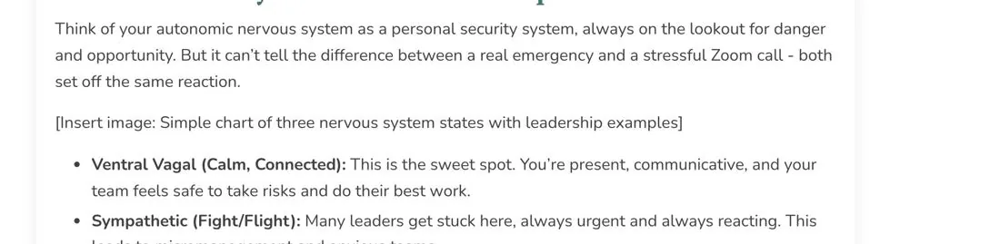

Your website, in plain English
A beautiful site on a solid platform. It needs a focused clean-up, not a rebuild. Tap the numbered pins on the screens to see what I found.
Strong first impression. Messy behind the scenes.
Working well
- A clear, confident message and warm photography
- Press logos like Forbes and Real Simple build trust fast
- Every page loads, the site is secure, and the workbook checkout works
- 20 in-depth articles, each set up for Google
Needs fixing
- 20 broken links, many inside articles that should lead to your offers
- Heavy pages: the homepage is 6.2 MB and Speaking is 14 MB
- No privacy policy, even though the site collects names and emails
- Two different menus, and some offers missing from the main one
The good news
- No redesign needed
- The five biggest fixes take about 5 to 8 hours in total
- Almost everything can be done inside Kajabi, without a developer
Tap any area to see what I found
Each score is out of 100. Under 55 needs work, 55 to 74 is fair, 75 and up is good.
50
Broken links Needs work
20 links lead to dead pages, including links meant to sell courses and toolkits.
Broken links Needs work
20 links lead to dead pages, including links meant to sell courses and toolkits.
What I found
- 9 links point to pages on your site that no longer exist, such as an old Nervous System Reset Course page and a toolkit page.
- 11 links to outside sources in your articles are dead or now go somewhere else.
- The Thrive Workbook page links to Kajabi's Twitter account instead of yours.
How to fix it
- Open each article in Kajabi, click the linked words, and paste in a current address. Where an offer no longer exists, link to what you offer today or remove the link.
- The full list is below.
Show the 20 links to fix
On your own site (fix these first)
| On this page | Link text | Goes to (dead) | Point it to |
|---|---|---|---|
| "Nervous System Reset Course" | /NeuroInformedLivingHubCoursesPage | A current offer, such as your free guide at /foundations-neuro-informed-living, or remove the link | |
| "Nervous System Reset Toolkit / Get the toolkit now!" | /nervous-system-reset | A current offer, or remove the link | |
| "Join the waitlist... / The Business Accelerator" | /businessaccelatorwaitlistpage | /contact, or remove until the program launches | |
| "Check out the podcast" | /podcast | /Podcast (the real address has a capital P) | |
| "a reorganization exhaust a team" | /blog/[[POST-6-SLUG]] | This is an unfilled placeholder. It most likely belongs to /blog/why-uncertainty-at-work-is-exhausting | |
| "here." | /blog/the-role-of-the-vagus-nerve-in-self-regulation-and-emotional-resilience | /blog/vagus-nerve-self-regulation | |
| "Read more in my article Why Understanding Your Nervous System..." | /blog/why-understanding-your-nervous-system-is-the-secret-to-business-success | /blog/nervous-system-business-success | |
| "Contact me to learn more..." | /Business-Coaching | /contact | |
| "Neuro-Informed Living" | /neuro-informed-living | /foundations-neuro-informed-living |
Sources in your articles
42
Speed Needs work
Key pages weigh 5 to 14 MB because images are uploaded far larger than they are shown.
Speed Needs work
Key pages weigh 5 to 14 MB because images are uploaded far larger than they are shown.
What I found
- A healthy page is under 2 MB. Several of yours are three to seven times that.
- Many photos are 1 to 1.5 MB each, and small icons are uploaded as 2,000-pixel images.
- A 1.3 MB pop-up image loads on 27 pages, even when nobody opens it.
How to fix it
- Resize photos to the size they are shown, then compress them with a free tool such as Squoosh or TinyPNG. Aim for under 300 KB each.
- Start with the pop-up image: one change speeds up 27 pages.
72
Mobile & design Fair
Works well on phones. A few layouts make text harder to read.
Mobile & design Fair
Works well on phones. A few layouts make text harder to read.
What I found
- On phones, the opening text on the Homepage, Speaking and Explore My Work sits on top of your photo.
- On a laptop, the menu hides behind a small "Menu" button.
- The About heading is pushed against the screen edge, and the Explore My Work intro is squeezed into a thin column.
How to fix it
- On phones, place the photo above or below the text, or add a soft overlay behind the words.
- Show the menu items in full on larger screens.

70
Google search Fair
Strong article titles, but your About and Speaking pages show up as "About 2026" and "Speaking 2026".
Google search Fair
Strong article titles, but your About and Speaking pages show up as "About 2026" and "Speaking 2026".
What I found
- Your two most important pages have placeholder titles in Google.
- 11 test pages, such as "Home Page 2" and "Blank Page", are public and listed for Google.
- A few pages have no description, so Google writes its own.
How to fix it
- Rename the titles in each page's SEO settings, for example "About Rebecca Kase | Clinician, CEO, Educator, Author".
- Unpublish the test pages. Keep the thank-you pages, but hide them from search.
Show suggested titles
| Page | Title Google shows now | Suggested title |
|---|---|---|
| /aboutRebeccaKase | About 2026 | About Rebecca Kase | Clinician, CEO, Educator, Author |
| /speaking-keynotes | Speaking 2026 | Keynote Speaker on Neurobiology & Trauma | Rebecca Kase |
| /blog | Articles | Nervous System and Leadership Articles | Rebecca Kase |
| /learn-with-me | Learn With Me | Explore My Work: Books, Courses, Resources | Rebecca Kase |
| /books | BooksRebecca Kase Books | Polyvagal, EMDR & Resilience Tools | Books by Rebecca Kase | Polyvagal, EMDR & Resilience |
| /press | Press | Media | Press and Media | Rebecca Kase |
| /podcasts/the-humble-therapist | the Humble therapist | The Humble Therapist Podcast | Rebecca Kase |
| /store | The same title as the homepage | Store | Rebecca Kase (or unpublish the page) |
68
Accessibility Fair
Two out of three images have no description, and some text is hard to read.
Accessibility Fair
Two out of three images have no description, and some text is hard to read.
What I found
- 203 of 319 images have no description (alt text), so screen readers and Google cannot tell what they show.
- White text on the teal buttons and footer is hard to read, and one line on the Resources page is almost invisible.
- The sign-up boxes have no labels.
How to fix it
- Add a short description to each meaningful image, for example "Rebecca Kase speaking on stage about leadership".
- Use a deeper teal or plum behind white text, and add a label above each sign-up box.
66
Content polish Fair
A visible placeholder, "launching soon" offers that are gone, and leftover template text.
Content polish Fair
A visible placeholder, "launching soon" offers that are gone, and leftover template text.
What I found
- The article Regulate to Rise shows an unfinished note: "[Insert image: Simple chart of three nervous system states with leadership examples]".
- Some articles still promote a toolkit and a course that are no longer available.
- Some pages say "© 2026 Kajabi" in the footer, and two old menu items have typos ("Nuero" and "Kate").
How to fix it
- Delete the note or add the chart, point old offers to the Thrive Workbook or your free guide, and set the footer to "© 2026 Rebecca Kase".

50
Trust & legal Needs work
No privacy policy, even though the site collects names and emails.
Trust & legal Needs work
No privacy policy, even though the site collects names and emails.
What I found
- Sign-up forms appear across the site and you sell a workbook, but there is no privacy policy or terms page.
- Only one of your 20 articles says it is not a substitute for professional care.
How to fix it
- Add Privacy Policy and Terms pages and link them in the footer. A reputable template is a good start, and a lawyer can confirm the details.
- Add one line to the blog template: "This article is for education only and is not a substitute for therapy or medical care."
This is general guidance, not legal advice.
Fix these five first
These fix the problems visitors are most likely to hit, and the ones most likely to cost sales or bookings. Tick each one off as it is done; your ticks are saved in this browser.
Then, when you have time 9 smaller fixes
Checked on October 22, 2026: 50 pages and 428 links, on a laptop and a phone screen, with Google Lighthouse. Websites change, so a link may behave differently later. The full report (PDF) has every detail.